GOYO
한옥의 차분한 분위기를 여백과 절제된 움직임으로 표현한 스테이 웹사이트입니다. 날짜 선택부터 예약자 정보 입력, 예약 완료와 조회·취소까지 이어지는 예약 흐름을 구현했습니다. 공간의 정적인 정서와 사용하기 편한 예약 경험을 함께 담았습니다.
Live Site목표
날짜와 인원 선택, 요금 확인, 예약 완료부터 조회·취소까지 연결하고, 한옥의 분위기를 담은 브랜드 아이덴티티와 일관된 화면을 구성했습니다.
담당
브랜드 기획, 로고·컬러·타이포그래피 설계, Figma UI 디자인, 반응형 퍼블리싱과 예약 기능 구현, 테스트 및 배포까지 전 과정을 단독으로 진행했습니다.
결과
데스크톱과 모바일에 대응하는 숙소 소개 및 예약 화면을 제작했습니다. 숙박 요금·연박 할인 계산, 예약자 정보 검증, 예약 내역 복사·공유를 구현했습니다. 예약번호·이메일 조회와 취소 규정에 따른 환불액 계산까지 연결하고, 한·영 전환과 주요 예약 흐름을 검증했습니다.
기술
- HTML
- CSS
- JavaScript
- GSAP
- flatpickr
- sessionStorage
- Vercel
-
01
레퍼런스 찾기
-
02
기획
-
03
시안 잡기
-
04
시안 만들기
-
05
코드로 옮기기
 Codex
Codex VS Code
VS Code -
06
배포
Foundations
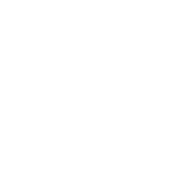
-
Canvas
paper
#FBFBF9 -
Inverse
footer
#1E1D1B -
Subtle
panel
#E9E7E0 -
Primary action
#2A2B2A -
Accent
wood
#605340
- 큰 제목 Noto Serif KR 낮은 처마 아래, 마음의 속도를 늦춥니다
- 공간 · 서비스의 편집형 표기 GyeonggiBatang 안방 · 사랑방 · 다도 · 조식
- 정보 · 조작 요소 Noto Sans KR 예약하기 · 1박 180,000원 · 2박 3일
PC
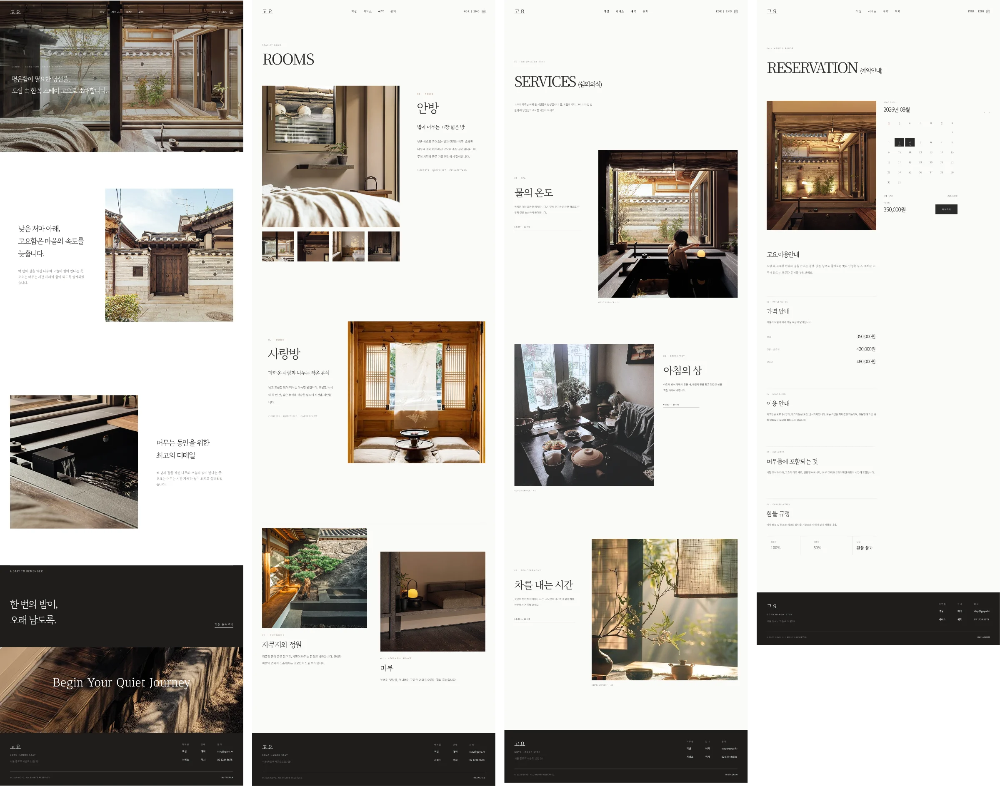
Mobile
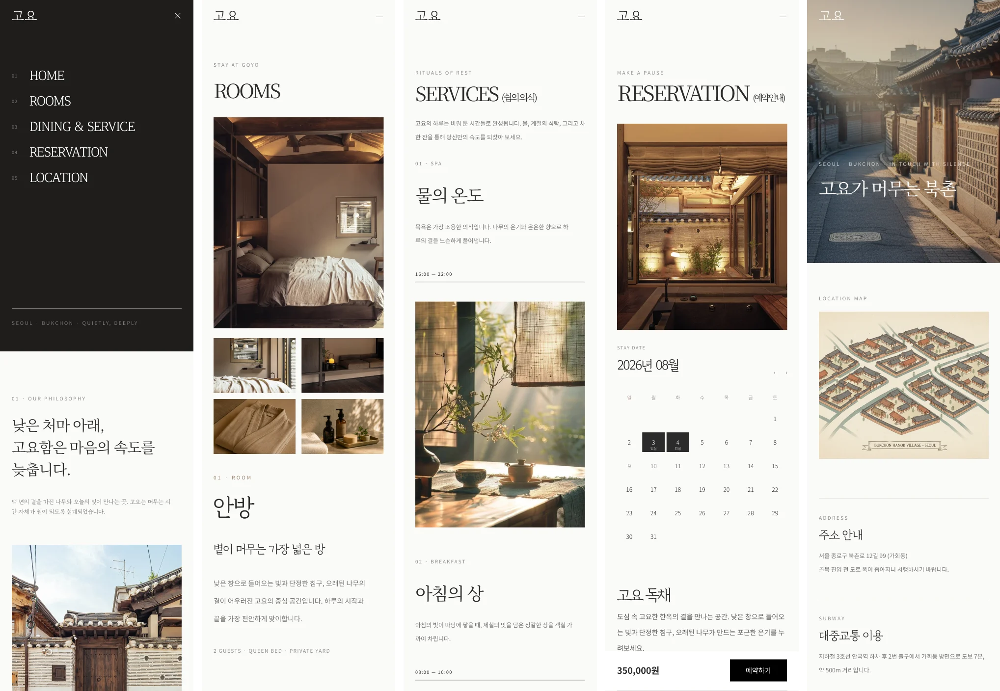
Reservation
01예약
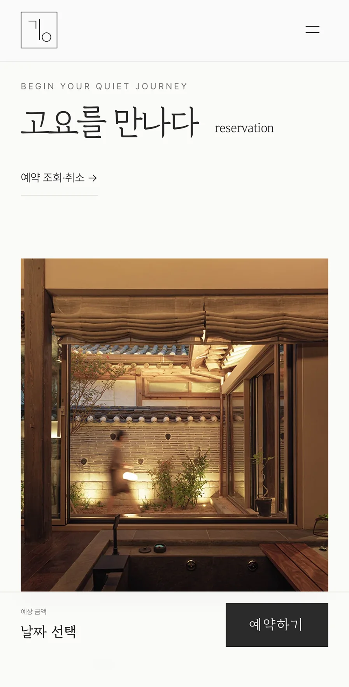
날짜 선택
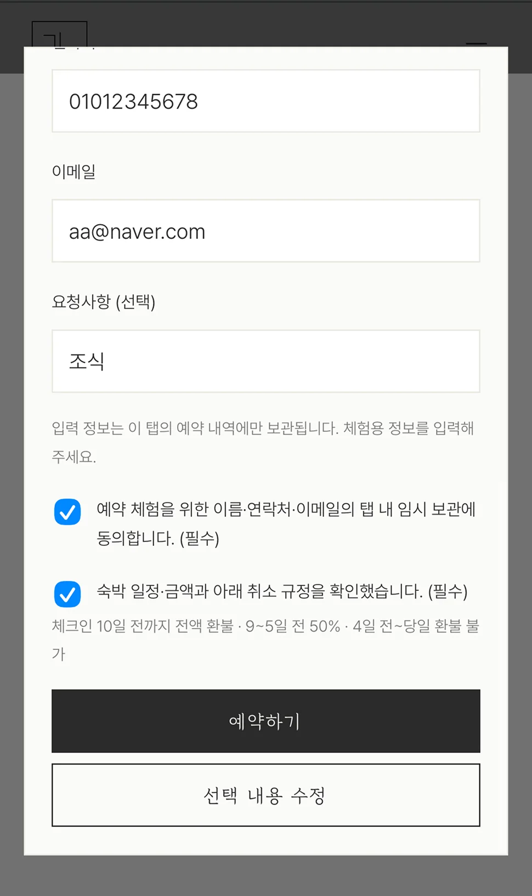
정보 입력 · 필수 동의 검증
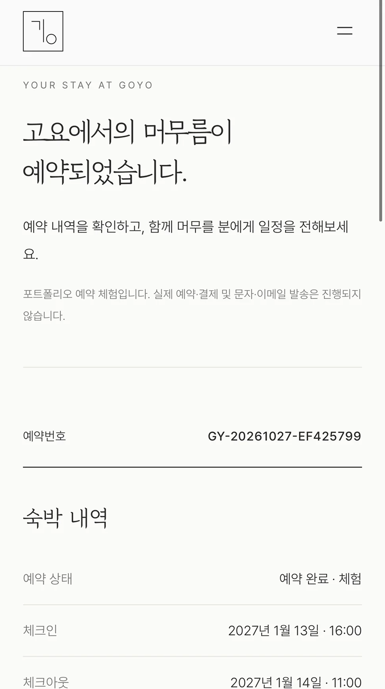
예약 완료 · 예약번호 발급
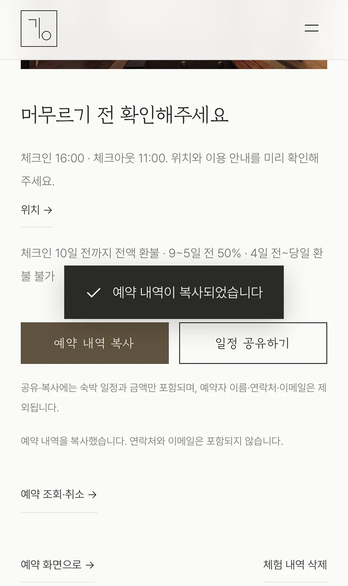
예약 내역 복사
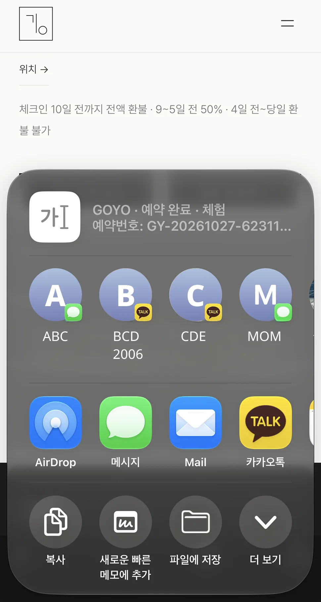
일정 공유하기
02조회
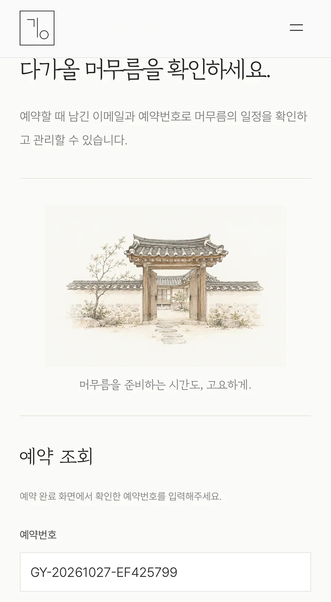
예약번호로 조회
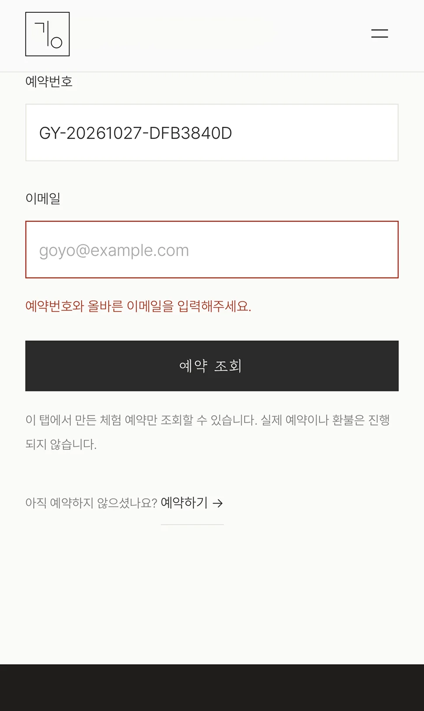
입력 오류 안내
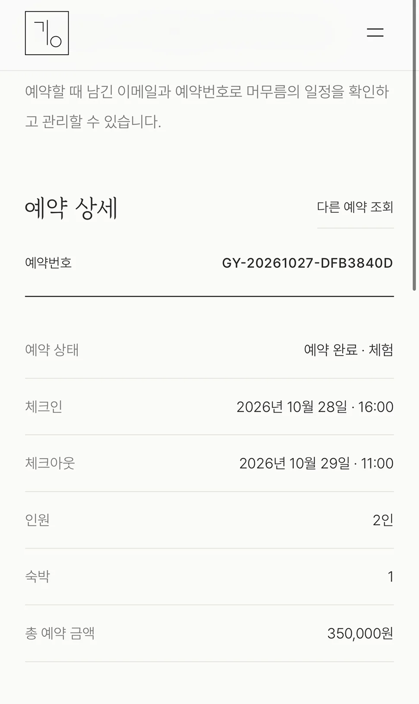
예약 상세 확인
03취소
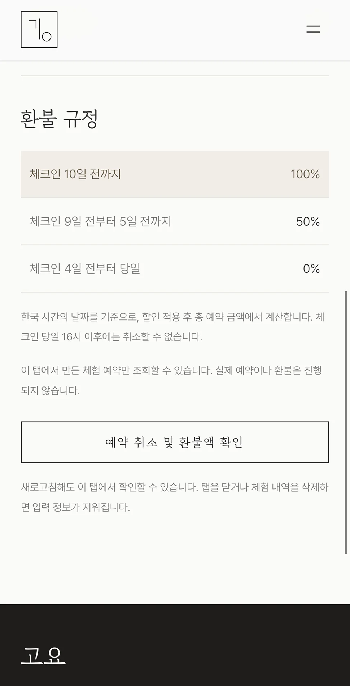
환불 규정 · 해당 구간 강조
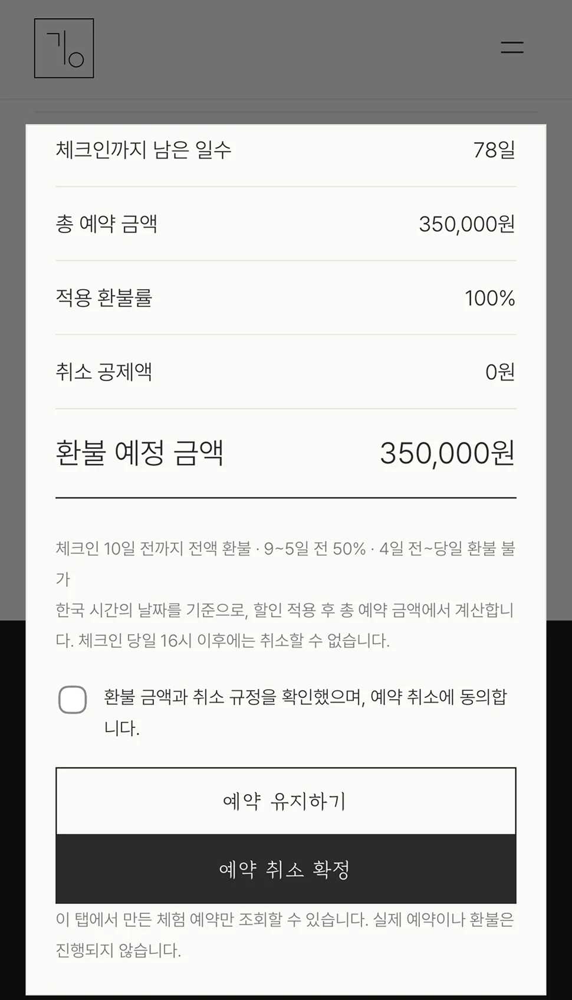
환불액 계산 · 취소 동의
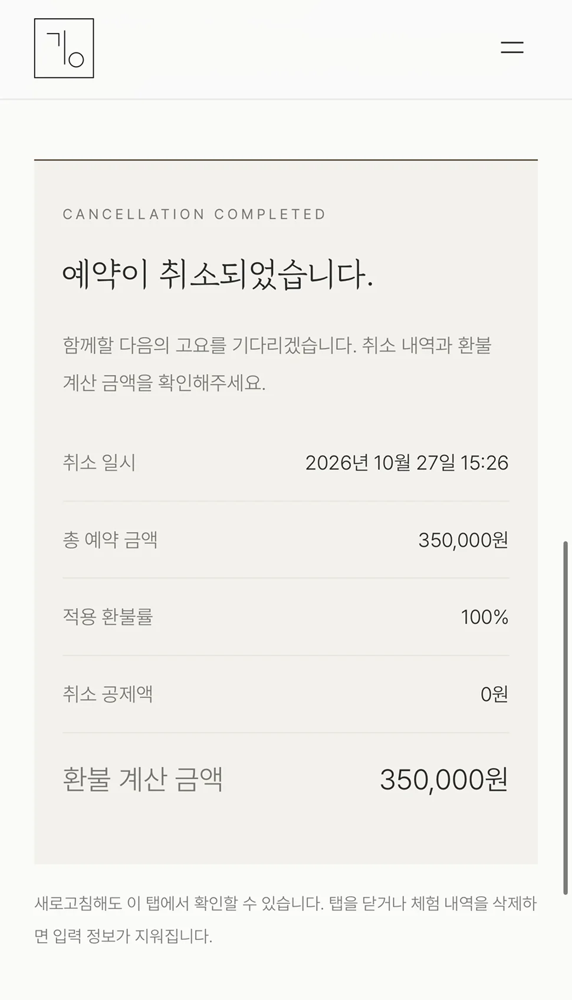
취소 완료 · 환불 내역
Web
날짜 범위 예약 달력 · 연박 요금 계산
예약자 정보 입력 · 필수 동의 · 오류 안내
예약 완료 · 예약번호 발급 · 내역 복사·공유
예약번호 · 이메일 조회
예약 취소 · 체크인 날짜별 환불액 계산
한·영 언어 전환
스크롤 모션 · 헤더 상태 변화
반응형 레이아웃 (데스크톱 · 모바일)
접근성 · 모션 줄이기 대응
배포 · 버전 관리
레퍼런스 · 기획
시안 잡기
시안 만들기
코드로 옮기기
배포
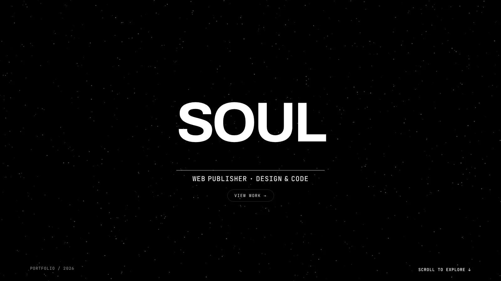